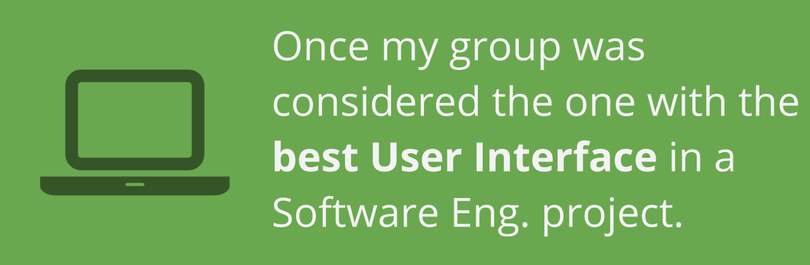
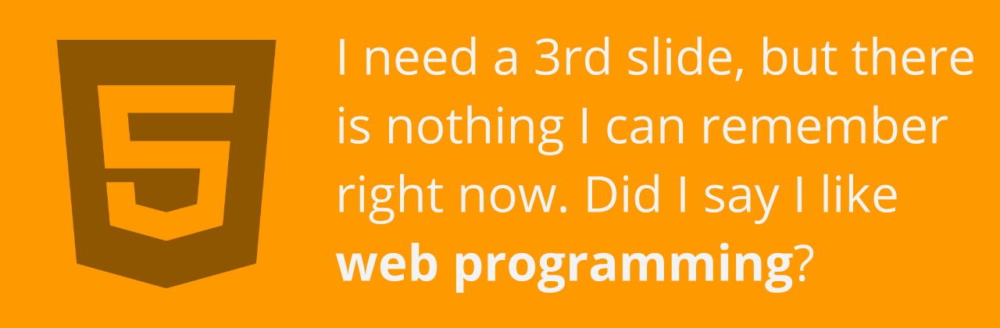

Hi, I'm Marco!
Here you can explore my adventures in the Computer Science world
and also get to know more about me.
Education
This is my academic life
University of Illinois at Urbana-Champaign
Hail to the orange, hail to the blue! Studying here since Fall 2014 with a scholarship from the Brazilian government, it has been an amazing time to take different courses and have great life experiences.
Universidade Federal de Sao Carlos
(UFSCar)
Where it all started. I'm currently a Junior in my CS major at UFSCar, one of the best public universities in Brazil, and I'll be back there to finish my degree once my time at Illinois is over.
Projects
This is what I've been doing
More about me
Some facts that you may like to know
- 
- 
Contact
I am almost everywhere. Seriously.
maarcooliveira maarcooliveira marcooliveiram maarcooliveira maarcooliveira mdeoliv2@uiuc maarcooliveira marco_andre2 maarcooliveira maarcooliveira maarcooliveira maarcooliveira
Urbana Green Map
In a Learning in Community class at UIUC, in partnership with the city of Urbana, IL, we developed a Green Map (map containing all the environmentally friendly infrastructure available in the city) and also a mobile application to help the students in the address gathering process.
What I worked with
- HTML/CSS
- Web Starter Kit
- Google Maps JavaScript API
- Android development
- Google Maps Android API
HeatMapp
Android application developed as a final project for my User Interface Design class at UIUC, in a group with three more students. Since the interface was the most important for the project, the backend of the app was not developed. The idea of this app is to gather the user's location and show it anonymously in a map, so other users can have an idea about how crowded a place is. It is also supposed show pictures taken in the most crowded places around the campus.
What I worked with
- Android development
- UI and UX prototyping
Undergrad Research
Undergraduate Research that I participated while sudent at UFSCar. I was part of the Smart Cities and Internet of Things research group and developed a Database, Android NFC app and a Webservice connecting them, proposing a system to replace the current university control of entrance in the Dining Hall. This project was funded by the National Counsel of Technological and Scientific Development and last about a year and a half.
What I worked with
- Android development
- Android NFC library
- ksoap2-android library
- SOAP webservice
- JavaDB database
Watch and Track
Google Chrome extension developed as my final project for the Programming Studio class. It is an automatic tracker that identifies what a user is watching on Netflix and automatically checkin the movie or show in Trakt.tv. At this time, the Trakt.tv API has changed, and the extension still using the old API calls. It may be fixed as soon as I get some free time.
What I worked with
- Chrome extension development
- JavaScript
- HTML/CSS
Weather App
An Android Weather application that I developed for an internship position as Android developer. It is just a basic application and weather for just one location can be seen at a time. The purpose of this app was to follow the main guidelines of Google's Material Design. The OpenWeatherMap.org's API was used in this project.
What I worked with
- Android development
- Some Material Design guidelines
- OpenWeatherMap API
- JSON parsing
This page
Yes! This webpage (to rule them all) started as an MP for my Web Programming class at UIUC. Since I never had time to do something that I really liked as my personal page, this was my chance! Just basic jQuery, SASS and some hard work created this page that you are visiting now. Hope you liked it!
What I worked with
- HTML
- CSS/SASS
- JavaScript/jQuery
- Some UI knowledge from my past semester